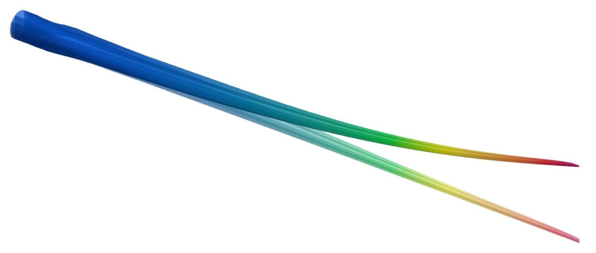

Wind turbine blades
Real blades taper, twist and curve, which standard cross-section tools ignore. With Sandia National Laboratories and NREL, I built the path from a blade's design file to a validated beam model. On a 100-meter test blade it agrees within 1–2% with a 3‑D simulation that needed 2,000 CPUs for one to two days.
